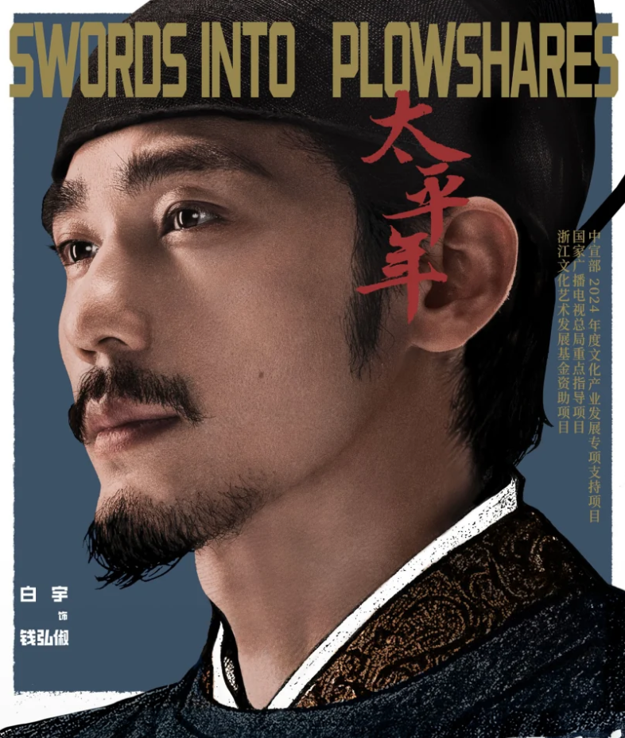
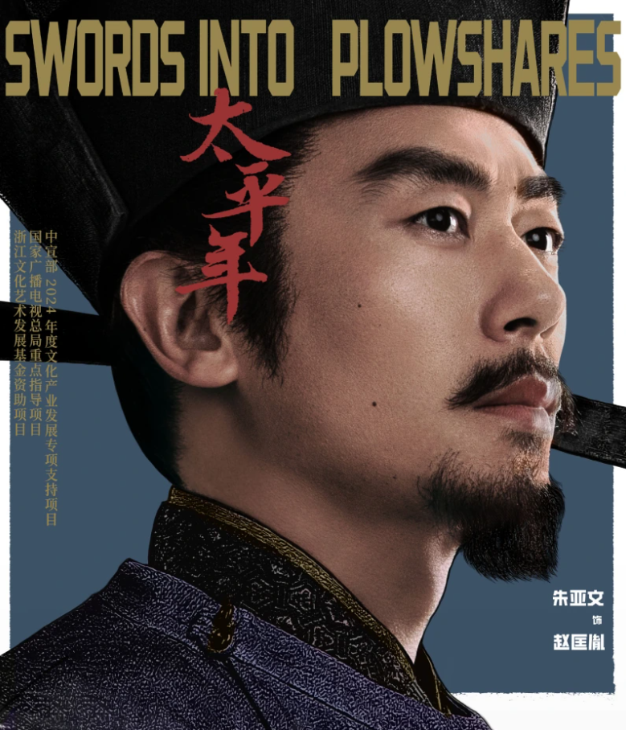
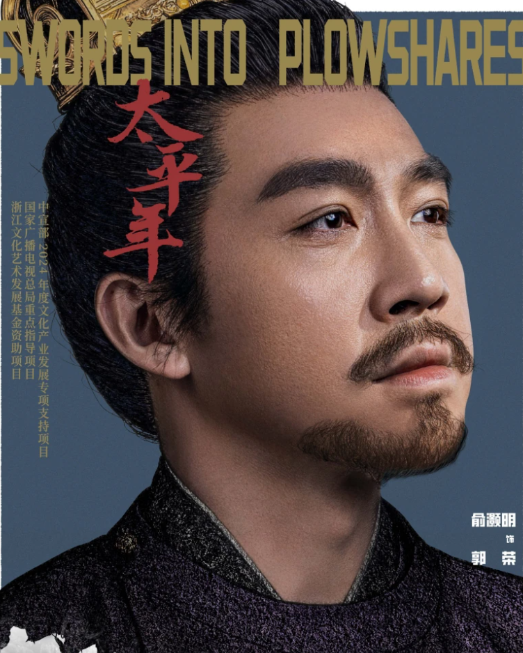

选择你的主公

 钱弘俶（保境安民）
钱弘俶（保境安民）
吴越末代君主，化名钱九郎，早年闲散渔猎，被胡进思拥立为王后，从潇洒王孙成长为心系苍生的明君。
奉行"保境安民"国策，与孙太真伉俪情深，为其修建雷峰塔祈福，最终以王位换江南百姓免遭战火，纳土归宋。
初始数值：民心80，兵力50，体力70

 赵匡胤（逐鹿中原）
赵匡胤（逐鹿中原）
北宋开国皇帝，早年为后周将领，魁梧勇猛，与钱弘俶不打不相识结下友谊。
郭荣病重后，幼主临朝，赵匡胤在陈桥驿被将士拥立，黄袍加身建立北宋，胸怀统一天下之志，终结五代乱世。
初始数值：民心60，兵力90，体力80

 郭荣（北伐拓土）
郭荣（北伐拓土）
后周世宗，郭威养子，励精图治，整顿禁军，改革内政，南征北战奠定统一基业。
北伐契丹时收复三关三州，兵锋直指幽州，却因重病被迫班师，英年早逝，是乱世中极具惋惜的明君。
初始数值：民心70，兵力80，体力60